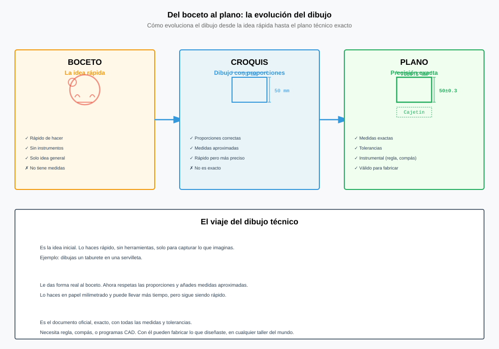
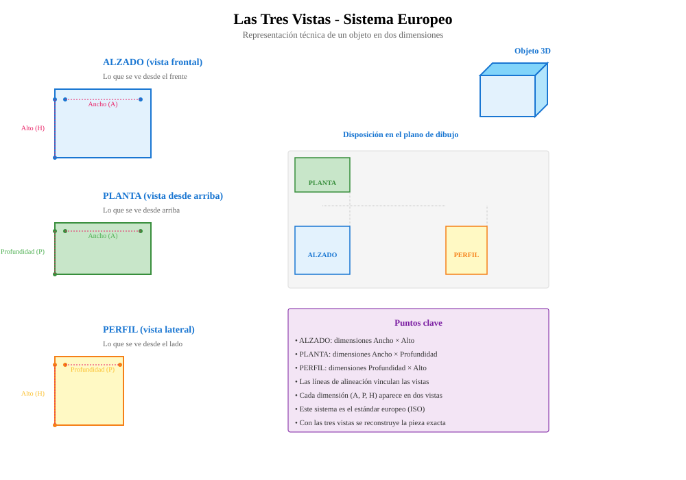

¿Por qué dibujamos? Dibujo técnico y dibujo artístico
Al terminar la sesión sabrás explicar en qué se diferencian los dos tipos de dibujo y por qué sin dibujo técnico no se puede fabricar nada.
Todo el tema 2 se sostiene sobre la competencia específica 4 («Explicar lo que has hecho con planos, esquemas y las palabras técnicas correctas») y su único criterio, el 4.1, apoyado en los saberes del bloque B · Comunicar ideas. Dos competencias más entran de refuerzo: la 1 cuando se analiza el objeto antes de dibujarlo y la 2 cuando el dibujo forma parte del diseño de una solución.
Criterios y saberes del tema completo
| Criterio | Qué pide | Saberes |
|---|---|---|
| 4.1 | Representar y comunicar el proceso de creación de un producto sencillo, desde su diseño hasta su difusión, elaborando documentación técnica y gráfica básica con la ayuda o no de herramientas digitales, empleando los formatos y el vocabulario técnico adecuados, de manera colaborativa. | B.1 · B.2 · B.3 |
| 1.2 | Comprender y examinar productos tecnológicos de uso habitual a través del análisis de objetos básicos y sistemas sencillos, empleando el método científico. | A.2 · A.3 |
| 2.1 | Idear y diseñar soluciones eficaces, innovadoras y sostenibles a problemas sencillos definidos, con actitud emprendedora, perseverante y creativa. | A.1 · A.8 · B.1 · B.3 |
Saberes básicos implicados, literales
- B.1 · Habilidades básicas de comunicación interpersonal: vocabulario técnico apropiado y pautas de conducta propias del entorno virtual (etiqueta digital).
- B.2 · Aplicaciones CAD en dos y tres dimensiones para la representación de esquemas, circuitos, planos y objetos básicos.
- B.3 · Herramientas digitales para la elaboración, publicación y difusión de documentación técnica e información multimedia relativa a proyectos sencillos.
- A.1 · Estrategias, técnicas y marcos de resolución de problemas sencillos en diferentes contextos y sus fases.
- A.3 · Análisis de productos básicos y de sistemas tecnológicos sencillos para la construcción de conocimiento desde distintos enfoques y ámbitos.
Reparto por sesión
- S1 Técnico vs artístico → 4.1 · 1.2 | B.1 · A.3
- S2 Boceto, croquis y plano → 4.1 · 2.1 | B.1 · A.1
- S3 Las tres vistas → 4.1 | B.1
- S4 Tipos de líneas → 4.1 | B.1
- S5 Normalización → 4.1 | B.1 · B.2
- S6 Proyecto y test → 4.1 · 2.1 | B.2 · B.3 · A.1
Ojo con una trampa habitual: en 2.º de ESO el currículo no tiene un saber que diga «vistas» o «acotación». La expresión gráfica entra como documentación técnica y gráfica básica del criterio 4.1 y como vocabulario técnico (B.1). Conviene dejarlo escrito así en la programación.
Describe con palabras, sin dibujar nada, la mesa en la que estás sentado, de forma que una carpintería pueda construir otra exactamente igual. Tienes 60 segundos.
Vamos a comprobar algo incómodo: el idioma no sirve para fabricar. Dos personas que escuchan la misma frase construyen dos mesas distintas. El dibujo técnico nace justo de ese problema.
Dibujar es comunicar
Un dibujo es la representación gráfica de una idea o de un objeto. Según para qué se haga, hablamos de dos grandes familias: el dibujo artístico y el dibujo técnico.
Dibujo artístico
Representa la realidad —o la imaginación— para transmitir sensaciones. Es libre y subjetivo: cada artista lo hace a su manera y cada persona lo interpreta de forma distinta. No necesita medidas ni normas.
Dibujo técnico
Representa un objeto de forma objetiva, precisa y normalizada para poder fabricarlo o construirlo. Lleva medidas reales, se dibuja a escala y sigue normas internacionales, así que todo el mundo lo entiende igual.
Dos ejemplos de verdad
Un cuadro y un plano. Los dos son dibujo, los dos están muy bien hechos… y no sirven para lo mismo.

Las Meninas, Diego Velázquez, 1656. Museo Nacional del Prado.
Las siete diferencias que hay que saber
| Se diferencian en… | Dibujo artístico | Dibujo técnico |
|---|---|---|
| Finalidad | Expresar, emocionar, decorar | Fabricar, construir, montar |
| Interpretación | Libre: cada uno ve una cosa | Única: solo significa una cosa |
| Medidas | No hacen falta | Imprescindibles (cotas en mm) |
| Normas | Ninguna | Normas UNE e ISO |
| Instrumentos | Lápiz, carboncillo, pincel… | Escuadra, cartabón, compás, CAD |
| Quién lo lee | El público | El taller, la obra, la fábrica |
| Ejemplo | El retrato de un grifo | El plano del grifo para fundirlo |
¿Por qué es necesario el dibujo técnico?
- Es un idioma universal. Un plano hecho en Sanlúcar se fabrica igual en Alemania o en Japón, sin traducir una sola palabra.
- Elimina la ambigüedad. Las cotas y las normas hacen que solo exista una interpretación posible.
- Permite fabricar antes de existir. Se dibuja la pieza, se calcula el material y el precio, y solo entonces se construye.
- Deja constancia. El plano es el documento legal de un proyecto: con él se pide licencia, se compra material y se reclama si algo sale mal.
- Lo usas ya sin darte cuenta. Las instrucciones de montaje de un mueble, el plano de evacuación del instituto o el esquema del cargador del móvil son dibujo técnico.
Dónde lo vas a encontrar
Cuatro familias de dibujo técnico. Cambia el objeto y cambian los símbolos, pero las normas son las mismas.
El mismo objeto —una taza— dibujado de las dos maneras. Cambia de pestaña y fíjate en qué información aparece y cuál desaparece. El dibujo técnico se traza solo, vista a vista.
Ver respuesta
A la fábrica, el técnico: lleva medidas (Ø92, Ø78, 160) y sigue normas, así que solo admite una interpretación y se puede fabricar. A la carta de la cafetería, el artístico: su finalidad es atraer, no fabricar, y las sombras y el trazo libre transmiten mejor la sensación del producto.
Qué necesitas
Cuaderno, lápiz, regla y un objeto pequeño de la mochila (goma, pendrive, calculadora, estuche…).
Cómo se hace
- Describir (5 min). Sin enseñarlo, el alumno A describe su objeto solo con palabras. El alumno B lo dibuja según lo que oye. Prohibido decir la marca o el nombre del objeto.
- Comparar (3 min). Se enseña el objeto real. Anotad en el cuaderno las tres diferencias más grandes entre el objeto y el dibujo.
- Dibujo artístico (6 min). Cada uno dibuja su objeto a mano alzada como lo ve: volumen, sombras, detalles. Sin regla.
- Dibujo técnico (9 min). Mismo objeto, ahora con regla: contorno limpio de frente y, al lado, las medidas reales en milímetros medidas con la regla.
- Conclusión (2 min). Escribe dos líneas: ¿cuál de tus dos dibujos serviría para que otra persona fabricase tu objeto? ¿Por qué?
Cómo se evalúa
- Los dos dibujos están hechos y se distinguen claramente entre sí (4 puntos).
- El dibujo técnico lleva medidas reales en milímetros y trazo limpio con regla (3 puntos).
- Las tres diferencias y la conclusión están escritas y razonadas (3 puntos).
Ticket de salida: responde en una línea cada pregunta antes de salir de clase. Primero la tuya en el cuaderno; después despliega y compara.
- ¿Qué tipo de dibujo admite varias interpretaciones?
Ver respuesta
El artístico. Es subjetivo: cada persona que lo mira puede entender algo distinto, y eso en un taller sería un desastre.
- Nombra dos cosas que tiene un dibujo técnico y que nunca tiene uno artístico.
Ver respuesta
Por ejemplo: cotas (medidas reales en milímetros) y escala. También valen: vistas normalizadas, ejes de simetría, tipos de línea normalizados o cajetín.
- ¿Por qué se dice que el dibujo técnico es un idioma universal?
Ver respuesta
Porque sigue normas internacionales (UNE e ISO): los mismos símbolos, líneas y cotas significan lo mismo en cualquier país, sin necesidad de traducir el plano.
Recursos de Wikimedia Commons con licencia libre, listos para incrustar o proyectar. Comprueba siempre la licencia concreta de cada archivo antes de publicarlo.
Boceto, croquis y plano: los tres pasos de una idea
Al terminar sabrás en qué se diferencian y, sobre todo, cuándo se usa cada uno. Hoy se dibuja: la mitad de la clase es lápiz y regla.
Dibuja tu estuche en 30 segundos. Sin regla, sin borrar, sin medir.
Lo que acabas de hacer tiene nombre: es un boceto. Nadie lo fabricaría con eso, pero en medio minuto ya has puesto tu idea en el papel, y esa es exactamente su función. Ahora vamos a ver qué le falta para llegar al taller.
Ver respuesta
Porque pensar es más barato en papel que en el taller. Cada boceto descarta una idea mala en un minuto; cada error descubierto en la fabricación cuesta material, horas y dinero.
Tres dibujos, tres momentos
No son tres formas de dibujar lo mismo: son tres fases del proyecto. Cada una aparece en su momento y sirve para algo distinto.
Boceto
Primer dibujo, a mano alzada y rápido. Sin medidas, sin instrumentos y con las proporciones aproximadas. Sirve para sacar ideas de la cabeza y compararlas. Se hacen varios y se tiran casi todos.
Croquis
También a mano alzada, pero ya en serio: proporciones cuidadas, acotado con medidas reales y con el material anotado. No está a escala. Es el dibujo que se hace delante de la pieza, con la regla en la mano.
Plano
El dibujo definitivo: con instrumentos o con CAD, a escala, con los tipos de línea normalizados, acotado y con cajetín. Es el único documento que va al taller.
| Boceto | Croquis | Plano | |
|---|---|---|---|
| Cómo se traza | A mano alzada | A mano alzada | Regla, escuadra, compás o CAD |
| Medidas | Ninguna | Sí, cotas reales | Sí, cotas reales |
| Escala | No | No | Sí (1:1, 1:2, 2:1…) |
| Proporciones | Aproximadas | Cuidadas | Exactas |
| Tiempo | Segundos | Minutos | Horas |
| Para qué | Pensar y comparar ideas | Tomar datos de la pieza | Fabricar |

Dos reglas que te van a puntuar
- En el boceto no se borra. Si una línea sale mal, se hace otra al lado. Borrar frena el pensamiento, y el boceto sirve justo para eso.
- El croquis se acota siempre en milímetros y sin escribir «mm». Una cifra suelta como 80 ya significa 80 milímetros: es la norma.
La misma pieza —un soporte en L— en las tres fases. Ve pasando y fíjate en qué se añade cada vez: primero la forma, luego las medidas, al final la escala y el cajetín.
Qué necesitas
Hoja lisa o cuadriculada, lápiz, goma, regla milimetrada y el objeto que te toque: un taco de madera, una pieza del taller o tu propia goma de borrar.
Cómo se hace
- Tres bocetos (6 min). Dibuja tu objeto tres veces desde tres puntos de vista distintos, dos minutos cada uno, a mano alzada. Sin borrar y sin regla.
- Elige y razona (2 min). Rodea el boceto que mejor explica la pieza y escribe en una línea por qué ese y no otro.
- Croquis acotado (10 min). Repite ese dibujo a mano alzada, más grande y con las proporciones cuidadas. Mide el objeto con la regla y pon las cotas en milímetros. Anota el material.
- Plano (7 min). El mismo dibujo con regla, limpio, a escala 1:1 si la pieza cabe en la hoja o 1:2 si no. Añade el cajetín abajo a la derecha con: nombre de la pieza, tu nombre, la fecha y la escala.
Cómo se evalúa
- Los tres bocetos están hechos y son tres vistas distintas (2 puntos).
- El croquis tiene proporciones creíbles y todas las cotas necesarias, en milímetros (3 puntos).
- El plano está trazado con regla, a la escala indicada y sin cotas repetidas (3 puntos).
- El cajetín está completo y bien colocado (2 puntos).
Ticket de salida. Responde en el cuaderno y luego compara.
- ¿Qué dibujo lleva medidas reales pero no está a escala?
Ver respuesta
El croquis: se hace a mano alzada, así que el dibujo no guarda la escala, pero sus cotas son las medidas reales de la pieza.
- Ordena las tres fases y di con qué instrumento se hace cada una.
Ver respuesta
Boceto (a mano alzada) → croquis (a mano alzada, con regla solo para medir) → plano (regla, escuadra y cartabón, o CAD).
- Vas a fabricar una pieza en el taller. ¿Qué dibujo de los tres te llevas y por qué?
Ver respuesta
El plano: es el único a escala, normalizado y con cajetín, así que no admite interpretaciones y sirve como documento del proyecto.
Las tres vistas: alzado, planta y perfil
Cómo se pasa una pieza de tres dimensiones al papel sin perder ni una medida. Es el contenido más importante del tema y el que más se pregunta.
Coge la pieza que hay en tu mesa y dibújala tal y como la ves, en perspectiva. Ahora intenta acotarla.
Ahí está el problema: en perspectiva, ninguna cara se ve en su tamaño real. Las caras se acortan, los ángulos rectos dejan de ser rectos y cualquier medida que pongas es mentira. La solución que inventó el dibujo técnico es mirar la pieza desde varios sitios, uno cada vez.
Mirar de frente: la proyección ortogonal
Imagina que te colocas justo enfrente de la pieza, con los ojos muy lejos, y que entre tú y ella hay un cristal. Si marcas en el cristal el contorno que ves, obtienes una proyección ortogonal: un dibujo plano donde todo lo paralelo al cristal conserva su medida real. Repite la operación desde arriba y desde un lado y tendrás tres dibujos que, juntos, describen la pieza sin ambigüedad.
Alzado
Lo que se ve de frente. Es la vista principal: se elige la que mejor explica la pieza y la que tenga menos aristas ocultas. Da el ancho y la altura.
Planta
Lo que se ve desde arriba. Se dibuja debajo del alzado y perfectamente alineada con él. Da el ancho y la profundidad.
Perfil izquierdo
Lo que se ve desde la izquierda. Se dibuja a la derecha del alzado, a su misma altura. Da la profundidad y la altura.
La regla de oro: correspondencia
Las tres vistas no son tres dibujos sueltos, están encadenadas:
- El alzado y la planta comparten anchos: todo lo que mides en horizontal cae en el mismo sitio en las dos.
- El alzado y el perfil comparten alturas: lo que en el alzado está a 30 mm del suelo, en el perfil también.
- La planta y el perfil comparten profundidad.
Por eso se dibujan con líneas de referencia finas que van de una vista a otra. Si una vista no cuadra con las demás, está mal: la correspondencia es el mejor corrector automático que tienes.
Cómo elegir el alzado
- El que muestre la pieza en su posición de trabajo o de uso.
- El que dé más información de un vistazo.
- El que deje menos aristas ocultas (líneas de trazos).

Elige una pieza y ve paso a paso. Verás salir cada vista en su sitio, con las líneas de referencia que la atan a las demás.
Qué necesitas
Hoja cuadriculada, lápiz y regla. Cada cuadro de la hoja equivale a 5 mm.
Parte A · De la pieza a las vistas (15 min)
- Dibuja las tres vistas de las tres piezas de la animación, una por pieza: alzado arriba a la izquierda, planta debajo, perfil a la derecha.
- Traza primero, con línea fina, las líneas de referencia entre vistas. Después repasa los contornos con trazo grueso.
- Comprueba la correspondencia: los anchos del alzado y la planta tienen que coincidir; las alturas del alzado y el perfil, también.
Parte B · De las vistas a la pieza (10 min)
- Tu compañero te pasa tres vistas dibujadas por él, sin decirte cuál es la pieza.
- Construye esa pieza con los bloques de madera del taller o dibújala en perspectiva.
- Comparad: si la pieza que has montado no es la suya, buscad juntos qué vista estaba mal.
Cómo se evalúa
- Las tres vistas de cada pieza están completas y bien colocadas en sistema europeo (4 puntos).
- La correspondencia entre vistas se mantiene y se ven las líneas de referencia (3 puntos).
- Las proporciones respetan la cuadrícula: 1 cuadro = 5 mm (2 puntos).
- La parte B está resuelta y razonada (1 punto).
- ¿Dónde se coloca la planta y por qué está justo ahí?
Ver respuesta
Debajo del alzado y alineada con él, porque comparten los anchos: así se pasa cualquier medida horizontal de una vista a otra con solo bajar una línea de referencia.
- Una pieza tiene 60 mm de ancho, 40 de alto y 25 de fondo. ¿Qué medidas aparecen en cada vista?
Ver respuesta
Alzado 60 × 40 (ancho y alto) · Planta 60 × 25 (ancho y fondo) · Perfil 25 × 40 (fondo y alto).
- ¿Por qué el perfil izquierdo se dibuja a la derecha del alzado?
Ver respuesta
Porque en el sistema europeo la pieza se proyecta sobre planos situados detrás de ella, así que cada vista acaba en el lado opuesto al del observador. Es la norma que se usa en España y en la UE.
Tipos de línea: el dibujo también tiene ortografía
En un plano, el grosor y la forma de cada línea significan algo. Confundirlas es como escribir sin tildes: se entiende mal o no se entiende.
Mira el dibujo de la animación de abajo durante un minuto y cuenta cuántas clases distintas de línea encuentras. No cuentes líneas: cuenta tipos.
Salen cinco. Cada una tiene un nombre, un grosor y un significado fijados por norma, y un plano bien hecho no usa ninguna otra.
Cinco líneas y un significado para cada una
| Línea | Cómo es | Para qué sirve |
|---|---|---|
| Continua gruesa | Trazo seguido y grueso | Aristas y contornos visibles. Es la protagonista del dibujo. |
| Continua fina | Trazo seguido y fino | Líneas de cota y auxiliares, rayado de las secciones, líneas de referencia. |
| Línea de trazos | Guiones cortos separados | Aristas y contornos ocultos: lo que existe pero no se ve desde fuera. |
| Trazo y punto fina | Raya larga, punto, raya larga | Ejes de simetría y de revolución. Marca el centro de agujeros y piezas redondas. |
| Continua fina a mano alzada | Ondulada | Roturas: cuando se corta el dibujo de una pieza larga para que quepa. |
Los grosores van a pares
La norma no fija milímetros concretos, fija una relación: la gruesa es el doble de ancha que la fina. En clase nos vale con dos portaminas o dos rotuladores calibrados: 0,5 mm para las gruesas y 0,25 mm para las finas. Si dibujas con lápiz, la gruesa se repasa; la fina se traza suave y una sola vez.
Cuándo dos líneas caen en el mismo sitio
Pasa a menudo: un eje y una arista oculta coinciden. Hay un orden de preferencia, y se dibuja la que gane:
- Arista visible (continua gruesa).
- Arista oculta (línea de trazos).
- Eje (trazo y punto).
Pulsa cada tipo de línea y verás dónde aparece en el dibujo. Todo lo demás se atenúa para que no haya dudas.
Parte A · Identificar (8 min)
Con el dibujo de la animación proyectado, copia en el cuaderno esta tabla y complétala: tipo de línea · dónde aparece · qué significa. Las cinco filas, con un ejemplo concreto en cada una.
Parte B · Repasar con los grosores correctos (10 min)
- Dibuja a lápiz, con regla, el alzado y la planta de una pieza de 100 × 60 mm con un agujero de 30 mm de diámetro en el centro.
- Repasa los contornos con trazo grueso y las cotas con trazo fino.
- Pon el agujero en línea de trazos en el alzado y como circunferencia en la planta.
- Añade los ejes del agujero en las dos vistas: cruzados en la planta, vertical en el alzado.
Parte C · Caza del error (7 min)
Intercambia el dibujo con un compañero y busca estos cuatro fallos clásicos. Anota cuáles encuentras:
- Agujero dibujado con línea continua en el alzado.
- Ejes que no sobresalen del contorno de la pieza.
- Cotas repetidas en las dos vistas.
- Todas las líneas con el mismo grosor.
Cómo se evalúa
- La tabla de la parte A está completa y es correcta (3 puntos).
- El dibujo distingue claramente los dos grosores (3 puntos).
- El agujero está en trazos y con sus ejes en las dos vistas (3 puntos).
- La caza del error está hecha y razonada (1 punto).
- ¿Con qué línea se dibuja un agujero que no se ve desde esa vista?
Ver respuesta
Con línea de trazos, porque es una arista oculta. Y su centro lleva además un eje de trazo y punto.
- Si una arista visible y un eje coinciden en el mismo sitio, ¿cuál se dibuja?
Ver respuesta
La arista visible: manda el orden de preferencia —visible, oculta, eje—. El eje solo se dibuja donde no tape nada.
- ¿Qué relación tienen que guardar el trazo grueso y el fino?
Ver respuesta
El grueso es el doble de ancho que el fino (por ejemplo 0,5 y 0,25 mm). Lo importante no es el número exacto, sino que se distingan a simple vista.
Normalización: formatos, escalas y cotas
Un plano no vale solo porque esté bien dibujado: tiene que estar dibujado como lo dibuja todo el mundo. Esta sesión va de las reglas que hacen que tu plano se entienda en cualquier taller.
En la sesión 3 sacaste las tres vistas de una pieza. Ahora coge ese dibujo y contesta: si se lo mandas por correo a un taller de Sevilla, ¿sabrían fabricarla?
Piénsalo bien antes de decir que sí. ¿En qué papel lo has dibujado? ¿De qué tamaño es la pieza de verdad? ¿Cuánto mide cada parte? ¿Quién lo ha dibujado y cuándo?
Por qué existen las normas
Si cada uno dibujara a su manera, un plano solo lo entendería quien lo hizo. Por eso hay normas internacionales —las ISO, que en España publica UNE— que fijan cómo se dibuja. No son manías: son lo que permite que una pieza diseñada en Jaén se fabrique en Alemania sin una sola llamada de teléfono.
El formato: la serie A
El papel no se elige a ojo. Se usa la serie A, que arranca en el A0 —un metro cuadrado de superficie— y va partiéndose por la mitad:
- A0 841 × 1189 mm · A1 594 × 841 · A2 420 × 594
- A3 297 × 420 · A4 210 × 297 ← el folio de siempre
Cada formato es exactamente la mitad del anterior, doblado por el lado largo. Y todos tienen la misma proporción, así que al reducir un A3 a un A4 no se deforma nada. Esa es la gracia del sistema.
La escala: cuánto encoge la realidad
Una vivienda no cabe en un A4, y un tornillo dibujado a tamaño real no se ve. La escala es la relación entre el dibujo y la pieza:
- Escala natural 1:1 — el dibujo mide lo mismo que la pieza.
- Escalas de reducción 1:2, 1:5, 1:10, 1:20, 1:50, 1:100 — la pieza es más grande que el papel. El plano de la vivienda de la sesión 1 estaba a 1:50: cada centímetro del papel son 50 cm reales.
- Escalas de ampliación 2:1, 5:1, 10:1 — la pieza es diminuta y se agranda.
La acotación: las medidas
Acotar es escribir las medidas reales sobre el dibujo. Una cota tiene tres partes:
- Líneas auxiliares de cota: dos líneas finas que salen de la pieza, perpendiculares a lo que mides.
- Línea de cota: la que une esas dos, paralela a la arista, terminada en flechas.
- Cifra de cota: el número, en milímetros y sin escribir la unidad.
Y cinco reglas que se piden siempre en el examen:
- Las cotas van fuera de la pieza siempre que se pueda.
- Cada medida se pone una sola vez. Repetir cotas es un error, no un refuerzo.
- Las cifras se leen desde abajo y desde la derecha, nunca boca abajo.
- Las líneas de cota no se cruzan entre sí. Las cotas pequeñas van dentro, las grandes fuera.
- Las cotas se reparten entre las tres vistas: cada una donde mejor se entienda, sin repetirla en las otras.
El cajetín
Es el recuadro donde el plano dice quién es. Va siempre en la esquina inferior derecha, pegado al marco, y mide 180 × 30 mm tanto si la lámina está en vertical como en apaisado. Sin cajetín, un plano no está terminado.
Pero antes del cajetín hay que dibujar el marco, y el marco no es el borde del papel: se dejan 20 mm en el lado izquierdo y 10 mm en los otros tres. Los 20 son por donde se archiva — las grapas, los agujeros de la carpeta —, y por eso ese lado lleva el doble. Un dibujo que llega hasta el borde se pierde en cuanto alguien lo guarda.
De ahí salen dos marcos distintos con el mismo A4, y conviene saberlo antes de empezar a medir:
- A4 vertical (210 × 297): el marco mide 180 × 277 mm, así que el cajetín ocupa justo todo su ancho.
- A4 apaisado (297 × 210): el marco mide 267 × 190 mm, y el cajetín, que sigue midiendo 180, deja 87 mm de marco libre a su izquierda.
Dentro van cinco datos, y se reparten con tres líneas finas: una horizontal a los 15 mm y dos verticales, a los 110 y a los 145.
- Título de la pieza — arriba a la izquierda, en la casilla grande.
- Escala — tal cual: 1:1, 1:2, 2:1.
- N.º de plano — 1/1 si es el único; 1/3, 2/3, 3/3 si son varios.
- Autor y grupo — abajo a la izquierda.
- Fecha — abajo a la derecha.
Y el orden con la regla, que ahorra media lámina de disgustos: primero el marco, después el cajetín midiendo desde la esquina de dentro — 180 hacia la izquierda y 30 hacia arriba —, y lo último el dibujo, con lo que quede. Al revés no cabe: quien dibuja primero la pieza descubre que el cajetín se le monta encima del perfil.
Tres cosas que se entienden mejor viéndolas que leyéndolas: cómo encaja la serie A, qué hace de verdad la escala y de qué partes se compone una cota.
Y el cajetín, que es lo que más puntos cuesta y lo que menos se explica. Aquí está con todas sus medidas: las de la pantalla son las que hay que llevar al papel con la regla.
Qué hay que hacer
- Coge las tres vistas que dibujaste en la sesión 3 y pásalas a limpio en un A4, a escala 1:1.
- Acota las tres vistas repartiendo las medidas: el ancho en el alzado, la profundidad en la planta, las alturas en el perfil. Ninguna medida repetida.
- Dibuja el marco —20 mm por la izquierda, 10 por los otros tres— y el cajetín de 180 × 30 mm en la esquina inferior derecha, con sus cinco casillas: título, escala, n.º de plano, tu nombre con el grupo y la fecha.
- Comprueba las cinco reglas de acotación una por una antes de entregar.
Cómo se evalúa
- Las tres vistas están a escala y en su posición correcta (3 puntos).
- La acotación está completa, sin repeticiones ni cruces (4 puntos).
- Las cifras se leen desde abajo y desde la derecha (1 punto).
- El cajetín está completo (2 puntos).
Ticket de salida: responde en una línea antes de salir de clase. Primero la tuya en el cuaderno; después despliega y compara.
- Si doblas un A3 por la mitad, ¿qué formato obtienes?
Ver respuesta
Un A4. Cada formato de la serie A es la mitad del anterior doblado por el lado largo, y mantiene la proporción.
- Una pieza mide 120 mm y la dibujas a escala 1:2. ¿Cuánto mide en el papel y qué cifra pones en la cota?
Ver respuesta
En el papel mide 60 mm, pero en la cota escribes 120. La cota siempre dice la medida real, no la del dibujo.
- ¿Por qué está mal poner la misma medida en dos vistas distintas?
Ver respuesta
Porque cada medida se acota una sola vez. Si la repites y una de las dos tiene una errata, el taller no sabe cuál es la buena.
El proyecto: de la idea al plano acotado
Última sesión del tema. Hoy no hay teoría nueva: se trata de usar todo lo anterior en una sola lámina y comprobar, con el test, qué ha quedado sujeto.
Te doy un encargo de una sola frase, como los de verdad:
Antes de dibujar nada, contesta en el cuaderno: ¿qué te falta saber para poder fabricarlo? Escribe al menos tres preguntas que le harías a quien te lo encarga.
Todo lo del tema, en cinco líneas. Si alguna te suena a nueva, vuelve a esa sesión antes de empezar.
- El dibujo técnico no admite interpretación. El artístico sí, y por eso no sirve para fabricar.
- Boceto → croquis → plano. A mano y sin medidas, a mano y con medidas, con instrumentos y normalizado.
- Tres vistas en sistema europeo: la planta debajo del alzado, el perfil izquierdo a la derecha.
- Cada línea dice algo: gruesa continua es arista vista, discontinua es arista oculta, de trazo y punto es eje.
- Normalización: formato A4, escala declarada, cotas en milímetros sin repetir y cajetín completo.
Qué hay que entregar
Una lámina A4 con el plano completo del soporte, lista para que alguien lo fabrique sin preguntarte nada.
- Decide tú las medidas que faltan. Un móvil típico mide unos 160 × 75 × 8 mm. El soporte debe sujetarlo inclinado y no volcarse.
- Boceto a mano alzada en una esquina del papel. Sin regla. Solo la idea.
- Las tres vistas a escala 1:1, en su posición del sistema europeo, con líneas de referencia finas que las aten.
- Tipos de línea correctos: gruesa para aristas vistas, discontinua para las ocultas, eje donde haga falta.
- Acota repartiendo: anchos en el alzado, profundidad en la planta, alturas en el perfil. Ninguna medida dos veces.
- Marco (20 mm a la izquierda, 10 en los otros tres lados) y cajetín de 180 × 30 mm en la esquina inferior derecha, con las cinco casillas.
Cómo se evalúa
- Las tres vistas son correctas y están en su posición (3 puntos).
- Se cumple la correspondencia entre vistas (2 puntos).
- Los tipos de línea son los que toca (1 punto).
- La acotación está completa, sin repetir ni cruzar (2 puntos).
- El cajetín está completo y la lámina, limpia (2 puntos).
Diez preguntas de todo el tema. Contéstalas primero en el cuaderno y luego márcalas aquí y pulsa Corregir. Cada una explica por qué —también las que aciertes—. No cuenta para nota.
Lo que tiene que haber quedado del tema
1. La diferencia esencial entre el dibujo artístico y el dibujo técnico es que…
2. Ordenados de menos a más definido, los tres dibujos de una idea van…
3. En el sistema europeo, la planta se dibuja…
4. ¿Qué comparten el alzado y el perfil?
5. Una línea discontinua de trazos representa…
6. Doblas un A2 por la mitad. ¿Qué formato te queda?
7. Dibujas a escala 1:20 una pieza de 300 mm. ¿Cuánto mide en el papel y qué escribes en la cota?
8. Una cota tiene tres partes. ¿Cuáles?
9. ¿Por qué una misma medida no se repite en dos vistas?
10. El cajetín…
Se corrige en tu propio navegador: no se envía ni se guarda nada.
Vuelve al encargo del principio: «un soporte para el móvil, en madera de 10 mm». Compara aquella frase con la lámina que acabas de entregar.
Entre una cosa y otra hay seis sesiones y un idioma nuevo. La frase la entiende cualquiera y no sirve para fabricar; la lámina no la entiende cualquiera, pero con ella se fabrica la pieza en cualquier taller del mundo. Eso es el dibujo técnico.
Licencia y uso
Tema 2 · Representación gráfica de un proyecto · © 2026 Roberto P. García Llorente, Profesor de Tecnología en Educación Secundaria.
Publicado bajo Creative Commons Reconocimiento-CompartirIgual 4.0 Internacional. Puedes copiarlo, adaptarlo y redistribuirlo, incluso con fines comerciales, siempre que cites la autoría, indiques si lo has modificado y publiques tus versiones derivadas con esta misma licencia.
Cómo citar
Roberto P. García Llorente (2026). Tema 2 · Representación gráfica de un proyecto. https://rgllorente82-png.github.io/robertotecnologia/2eso/TyD/tema2/. Bajo licencia CC BY-SA 4.0.
Qué cubre esta licencia
Cubre los textos, los dibujos y el código de estas páginas. No cubre las obras de terceros incluidas o enlazadas, que conservan su propia condición legal: Las Meninas de Velázquez es dominio público (Museo Nacional del Prado) y las tipografías proceden de Google Fonts con su licencia correspondiente.
Otros usos
Para cualquier uso que exceda lo que permite la licencia, abre una incidencia en el repositorio del proyecto.
Lectura de aula
Treinta párrafos numerados y diez preguntas. Ocupa una sesión entera: se lee en voz alta por turnos, un párrafo cada uno, y luego se contesta por escrito. Trae su cabecera para el nombre, el grupo y la fecha.
Descargar el PDF